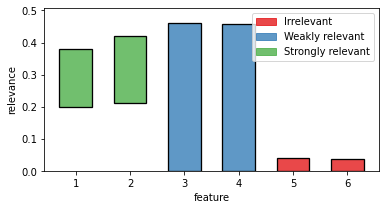

Quick start guide
Installation
Stable
Fri can be installed via the Python Package Index (PyPI).
If you have pip installed just execute the command
pip install fri
to get the newest stable version.
The dependencies should be installed and checked automatically. If you have problems installing please open issue at our tracker.
Development
To install a bleeding edge dev version of FRI you can clone the GitHub repository using
git clone git@github.com:lpfann/fri.git
and then check out the dev branch: git checkout dev.
We use poetry for dependency management.
Run
poetry install
in the cloned repository to install fri in a virtualenv.
To check if everything works as intented you can use pytest to run the unit tests.
Just run the command
poetry run pytest
in the main project folder
Using FRI
Now we showcase the workflow of using FRI on a simple classification problem.
Data
To have something to work with, we need some data first.
fri includes a generation method for binary classification and regression data.
In our case we need some classification data.
import numpy as np
# fixed Seed for demonstration
STATE = np.random.RandomState(123)
from fri import genClassificationData
We want to create a small set with a few features.
Because we want to showcase the all-relevant feature selection, we generate multiple strongly and weakly relevant features.
n = 300
features = 6
strongly_relevant = 2
weakly_relevant = 2
X,y = genClassificationData(n_samples=n,
n_features=features,
n_strel=strongly_relevant,
n_redundant=weakly_relevant,
random_state=STATE)
The method also prints out the parameters again.
X.shape
(300, 6)
We created a binary classification set with 6 features of which 2 are strongly relevant and 2 weakly relevant.
Preprocess
Because our method expects mean centered data we need to standardize it first. This centers the values around 0 and deviation to the standard deviation
from sklearn.preprocessing import StandardScaler
X_scaled = StandardScaler().fit_transform(X)
Model
Now we need to creata a Model.
We use the FRI module.
import fri
fri provides a convenience class fri.FRI to create a model.
fri.FRI needs the type of problem as a first argument of type ProblemName.
Depending on the Problem you want to analyze pick from one of the available models in ProblemName.
list(fri.ProblemName)
[<ProblemName.CLASSIFICATION: [<class 'fri.model.classification.Classification'>, <ProblemName.CLASSIFICATION: 1>]>,
<ProblemName.REGRESSION: [<class 'fri.model.regression.Regression'>, <ProblemName.REGRESSION: 2>]>,
<ProblemName.ORDINALREGRESSION: [<class 'fri.model.ordinal_regression.OrdinalRegression'>, <ProblemName.ORDINALREGRESSION: 3>]>,
<ProblemName.LUPI_CLASSIFICATION: [<class 'fri.model.lupi_classification.LUPI_Classification'>, <ProblemName.LUPI_CLASSIFICATION: 4>]>,
<ProblemName.LUPI_REGRESSION: [<class 'fri.model.lupi_regression.LUPI_Regression'>, <ProblemName.LUPI_REGRESSION: 5>]>,
<ProblemName.LUPI_ORDREGRESSION: [<class 'fri.model.lupi_ordinal_regression.LUPI_OrdinalRegression'>, <ProblemName.LUPI_ORDREGRESSION: 6>]>]
Because we have Classification data we use the ProblemName.CLASSIFICATION to instantiate our model.
fri_model = fri.FRI(fri.ProblemName.CLASSIFICATION,
loss_slack=0.2,
w_l1_slack=0.2,
random_state=STATE)
fri_model
FRI(loss_slack=0.2, n_jobs=1, n_param_search=10, n_probe_features=20,
normalize=True,
problemName=<ProblemName.CLASSIFICATION: [<class 'fri.model.classification.Classification'>, <ProblemName.CLASSIFICATION: 1>]>,
random_state=RandomState(MT19937) at 0x25AFE7F5E18, verbose=0,
w_l1_slack=0.2)
We used no parameters for creation so the defaults are active.
Fitting to data
Now we can just fit the model to the data using scikit-learn like commands.
fri_model.fit(X_scaled,y)
FRI(loss_slack=0.2, n_jobs=1, n_param_search=10, n_probe_features=20,
normalize=True,
problemName=<ProblemName.CLASSIFICATION: [<class 'fri.model.classification.Classification'>, <ProblemName.CLASSIFICATION: 1>]>,
random_state=RandomState(MT19937) at 0x25AFE7F5E18, verbose=0,
w_l1_slack=0.2)
The resulting feature relevance bounds are saved in the interval_ variable.
fri_model.interval_
array([[1.99563942e-01, 3.79968717e-01],
[2.12189365e-01, 4.19893133e-01],
[0.00000000e+00, 4.62347531e-01],
[0.00000000e+00, 4.58075157e-01],
[0.00000000e+00, 4.08336422e-02],
[1.59611431e-10, 3.54807291e-02]])
If you want to print out the relevance class use the print_interval_with_class() function.
print(fri_model.print_interval_with_class())
############## Relevance bounds ##############
feature: [LB -- UB], relevance class
0: [0.2 -- 0.4], Strong relevant
1: [0.2 -- 0.4], Strong relevant
2: [0.0 -- 0.5], Weak relevant
3: [0.0 -- 0.5], Weak relevant
4: [0.0 -- 0.0], Irrelevant
5: [0.0 -- 0.0], Irrelevant
The bounds are grouped in 2d sublists for each feature.
To acess the relevance bounds for feature 2 we would use
fri_model.interval_[2]
array([0. , 0.46234753])
The relevance classes are saved in the corresponding variable relevance_classes_:
fri_model.relevance_classes_
array([2, 2, 1, 1, 0, 0])
2 denotes strongly relevant features, 1 weakly relevant and 0 irrelevant.
Plot results
The bounds in numerical form are useful for postprocesing.
If we want a human to look at it, we recommend the plot function plot_relevance_bars.
We can also color the bars according to relevance_classes_
# Import plot function
from fri.plot import plot_relevance_bars
import matplotlib.pyplot as plt
%matplotlib inline
# Create new figure, where we can put an axis on
fig, ax = plt.subplots(1, 1,figsize=(6,3))
# plot the bars on the axis, colored according to fri
out = plot_relevance_bars(ax,fri_model.interval_,classes=fri_model.relevance_classes_)

Setting constraints manually
Our model also allows to compute relevance bounds when the user sets a given range for the features.
We use a dictionary to encode our constraints.
preset = {}
Example
As an example, let us constrain the third from our example to the minimum relevance bound.
preset[2] = fri_model.interval_[2, 0]
We use the function constrained_intervals.
Note: we need to fit the model before we can use this function. We already did that, so we are fine.
const_ints = fri_model.constrained_intervals(preset=preset)
const_ints
array([[2.15480177e-01, 3.79968718e-01],
[2.35275798e-01, 4.19820750e-01],
[0.00000000e+00, 0.00000000e+00],
[2.55994922e-01, 4.40560181e-01],
[0.00000000e+00, 3.24886271e-02],
[2.49563132e-11, 3.32969678e-02]])
Feature 3 is set to its minimum (at 0).
How does it look visually?
fig, ax = plt.subplots(1, 1,figsize=(6,3))
out = plot_relevance_bars(ax, const_ints)

Feature 3 is reduced to its minimum (no contribution).
In turn, its correlated partner feature 4 had to take its maximum contribution.
Print internal Parameters
If we want to take at internal parameters, we can use the verbose flag in the model creation.
fri_model = fri.FRI(fri.ProblemName.CLASSIFICATION, verbose=True, random_state=STATE)
fri_model.fit(X_scaled,y)
Fitting 3 folds for each of 10 candidates, totalling 30 fits
[Parallel(n_jobs=1)]: Using backend SequentialBackend with 1 concurrent workers.
[Parallel(n_jobs=1)]: Done 30 out of 30 | elapsed: 0.1s finished
[Parallel(n_jobs=1)]: Using backend SequentialBackend with 1 concurrent workers.
******************** Best found baseline model ********************
Classification_SVM(C=0.053126576297160326)
score: 0.9766669259288066
'loss: 59.43457025190969'
'w_l1: 3.186624268460236'
'w: shape (6,)'
'b: shape ()'
'slack: shape (300,)'
******************************
[Parallel(n_jobs=1)]: Done 18 out of 18 | elapsed: 0.1s finished
[Parallel(n_jobs=1)]: Using backend SequentialBackend with 1 concurrent workers.
[Parallel(n_jobs=1)]: Done 40 out of 40 | elapsed: 0.3s finished
[Parallel(n_jobs=1)]: Using backend SequentialBackend with 1 concurrent workers.
[Parallel(n_jobs=1)]: Done 20 out of 20 | elapsed: 0.1s finished
INFO:root:**** Feature Selection ****
INFO:root:Lower Probe Statistic
INFO:root:ProbeStatistic(lower_threshold=0.0, upper_threshold=0.0, n_probes=11)
INFO:root:Upper Probe Statistic
INFO:root:ProbeStatistic(lower_threshold=-0.08953248574047366, upper_threshold=0.11254187120595376, n_probes=10)
FRI(loss_slack=0.001, n_jobs=1, n_param_search=10, n_probe_features=20,
normalize=True,
problemName=<ProblemName.CLASSIFICATION: [<class 'fri.model.classification.Classification'>, <ProblemName.CLASSIFICATION: 1>]>,
random_state=RandomState(MT19937) at 0x25AFE7F5E18, verbose=True,
w_l1_slack=0.001)
This prints out the parameters of the baseline model
One can also see the best selected hyperparameter according to gridsearch and the training score of the model in score.
Multiprocessing
To enable multiprocessing simply use the n_jobs parameter when init. the model.
It expects an integer parameter which defines the amount of processes used.
n_jobs=-1 uses all available on the CPU.
fri_model = fri.FRI(fri.ProblemName.CLASSIFICATION,
n_jobs=-1,
verbose=1,
random_state=STATE)
fri_model.fit(X_scaled,y)
Fitting 3 folds for each of 10 candidates, totalling 30 fits
[Parallel(n_jobs=-1)]: Using backend LokyBackend with 12 concurrent workers.
[Parallel(n_jobs=-1)]: Done 30 out of 30 | elapsed: 2.0s finished
[Parallel(n_jobs=-1)]: Using backend LokyBackend with 12 concurrent workers.
[Parallel(n_jobs=-1)]: Done 14 out of 18 | elapsed: 0.0s remaining: 0.0s
[Parallel(n_jobs=-1)]: Done 18 out of 18 | elapsed: 0.0s finished
[Parallel(n_jobs=-1)]: Using backend LokyBackend with 12 concurrent workers.
******************** Best found baseline model ********************
Classification_SVM(C=31.987051186027454)
score: 0.9900001111123456
'loss: 8.419355087574399'
'w_l1: 47.66916725351819'
'w: shape (6,)'
'b: shape ()'
'slack: shape (300,)'
******************************
[Parallel(n_jobs=-1)]: Done 40 out of 40 | elapsed: 0.1s finished
[Parallel(n_jobs=-1)]: Using backend LokyBackend with 12 concurrent workers.
[Parallel(n_jobs=-1)]: Done 18 out of 20 | elapsed: 0.0s remaining: 0.0s
[Parallel(n_jobs=-1)]: Done 20 out of 20 | elapsed: 0.0s finished
INFO:root:**** Feature Selection ****
INFO:root:Lower Probe Statistic
INFO:root:ProbeStatistic(lower_threshold=-0.039150504419478684, upper_threshold=0.046026976488379744, n_probes=3)
INFO:root:Upper Probe Statistic
INFO:root:ProbeStatistic(lower_threshold=-0.08997621770611755, upper_threshold=0.16031569991384712, n_probes=6)
FRI(loss_slack=0.001, n_jobs=-1, n_param_search=10, n_probe_features=20,
normalize=True,
problemName=<ProblemName.CLASSIFICATION: [<class 'fri.model.classification.Classification'>, <ProblemName.CLASSIFICATION: 1>]>,
random_state=RandomState(MT19937) at 0x25AFE7F5E18, verbose=1,
w_l1_slack=0.001)